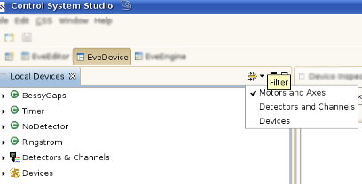

The contents of the Local Devices View can be filtered such that certain types of devices aren’t shown. To hide a certain type of devices simply enable the corresponding item in the toolbar menu as shown in the image below. Deactivate the filter by clicking on the menu item again.

Note: Filters are additive (i.e. multiple filters can be active at once).